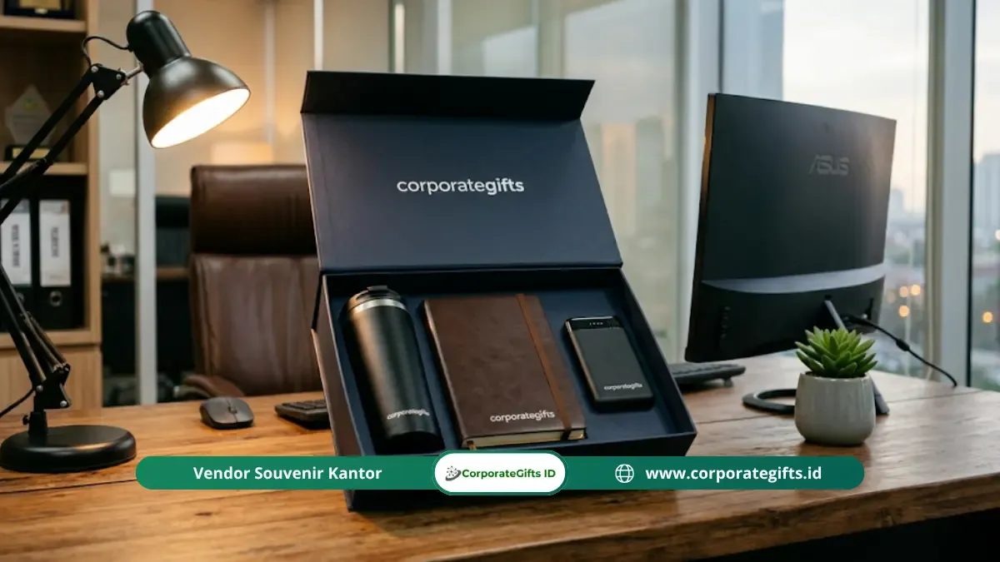

Corporate Gifts ID - Tips memilih souvenir kickoff meeting yang berkesan: pahami profil peserta, pilih barang fungsional yang dipakai sehari-hari, sesuaikan dengan tema acara, tetapkan anggaran per orang, dan minta sampel sebelum produksi massal. Souvenir yang berguna akan terus mengingatkan peserta pada acara dan brand perusahaan Anda.
Poin Kunci Memilih Souvenir Kickoff Meeting:
- Fungsionalitas Sehari-hari: Souvenir berkesan adalah cenderamata yang dipakai berulang kali dalam rutinitas kerja peserta.
- 4 Kriteria Inti: Wajib memenuhi unsur fungsional, relevan dengan profil audiens, dapat dikustomisasi, dan bermaterial tangguh.
- Hindari Generik & Dekoratif: Hindari barang yang hanya pajangan tanpa nilai praktis atau identik dengan acara tahun lalu.
- Riset Singkat: Lakukan identifikasi demografi peserta sebelum menentukan jenis cenderamata.
- Kemasan & Kartu Ucapan: Packaging rapi dan personalisasi pesan menyumbang lebih dari 50% impresi awal penerima.
Mengapa Banyak Souvenir Kickoff Meeting Gagal Meninggalkan Kesan?
Souvenir kickoff meeting sering kali gagal meninggalkan kesan mendalam karena dipilih secara terburu-buru, terlalu generik, atau tidak relevan dengan kebutuhan nyata peserta di tempat kerja.
Souvenir yang tidak tepat bukan hanya memboroskan anggaran operasional perusahaan. Pengadaan suvenir yang berkualitas rendah justru berisiko memberikan sinyal negatif terhadap kredibilitas dan komitmen manajemen dalam menyelenggarakan acara kickoff tersebut.
Peserta rapat kerja dan tim internal dapat merasa kurang dihargai ketika menerima cenderamata yang terkesan murahan, mudah rusak, atau sama sekali tidak memiliki sentuhan personalisasi brand yang profesional.
Secara psikologis, penerima cenderung menyimpan, memajang, dan memakai barang-barang yang mempermudah produktivitas mereka. Sebaliknya, barang yang tidak fungsional akan segera terlupakan di laci meja, dibuang, atau diberikan kepada orang lain. Oleh karena itu, faktor daily utility (kegunaan sehari-hari) adalah penentu mutlak keberhasilan investasi cenderamata Anda.
4 Kriteria Souvenir Kickoff Meeting yang Berkesan
Souvenir kickoff meeting yang berhasil membangun team engagement dan brand recall kuat wajib memenuhi empat pilar standar industri berikut:
1. Fungsionalitas Tinggi (Daily Utility)
Prioritaskan merchandise yang akan dipakai oleh rekan kerja secara konsisten. Peralatan esensial kantor seperti tumbler stainless insulated, buku agenda kerja hardcover, atau canvas tote bag berkualitas tinggi digunakan hampir setiap hari, memastikan identitas korporat terus hadir dalam ruang kerja mereka.
Sebisa mungkin hindari souvenir yang murni bersifat pajangan dekoratif tanpa nilai guna nyata, seperti plakat mini akrilik tanpa fungsi, ornamen meja yang memakan tempat, atau gantungan kunci plastik generik.
2. Kemampuan Kustomisasi Brand yang Elegan
Souvenir yang diaplikasikan dengan teknik branding presisi seperti grafir laser, deboss kulit sintetis, atau cetak UV beresolusi tinggi memiliki nilai persepsi jauh lebih prestisius dibandingkan barang polos tanpa identitas.
Sentuhan kustomisasi nama karyawan atau tema spesifik kickoff meeting Q2 akan mengikat emosi positif peserta terhadap pencapaian target perusahaan yang dicanangkan bersama.
3. Kualitas Material yang Layak dan Tahan Lama
Material cenderamata mencerminkan citra dan standar mutu korporat Anda. Cenderamata dengan jahitan mudah lepas, cat mengelupas, atau komponen plastik tipis akan mencoreng reputasi perusahaan. Pastikan bekerja sama dengan vendor yang menyediakan fasilitas free dummy sample sebelum kontrak produksi massal diterbitkan.
4. Relevansi dengan Profil dan Gaya Kerja Peserta
Souvenir yang bertolak belakang dengan karakter pekerjaan peserta dipastikan mubazir. Identifikasi apakah peserta Anda mayoritas bekerja secara remote/hybrid, sering melakukan kunjungan lapangan, atau staf operasional kantor. Sesuaikan pilihan cenderamata agar menopang efisiensi kerja mereka.

Kurasi cenderamata kickoff meeting yang dipersiapkan secara matang meningkatkan loyalitas tim kerja dan citra positif korporat.
Komparasi Pilihan Souvenir Kickoff Meeting & Relevansinya
Berikut adalah tabel acuan ringkas pemilihan paket souvenir kickoff meeting berdasarkan tipe audiens, fungsi kerja, dan estimasi anggarannya:
| Kategori Souvenir | Rekomendasi Item | Fungsionalitas Kerja | Estimasi Biaya / Orang | Tingkat Retensi |
|---|---|---|---|---|
| Productivity Kit | Notebook Hardcover + Pen Metal Grafir | Mencatat poin evaluasi target & strategi | Rp45.000 - Rp85.000 | Tinggi (6-12 Bln) |
| Eco-Lifestyle Kit | Tumbler Vacuum Flask 500ml + Canvas Tote | Hidrasi kerja harian & mobilitas dokumen | Rp65.000 - Rp120.000 | Sangat Tinggi (>1 Thn) |
| Tech Accessories | Fast Wireless Charger + Kabel 3-in-1 Braided | Mendukung setup workstation digital | Rp90.000 - Rp175.000 | Tinggi (>1 Thn) |
| Executive Gift Set | Leather Organizer + Flashdisk Kartu + Tumbler LED | Perlengkapan manajerial & presentasi luar kota | Rp185.000 - Rp350.000 | Eksklusif (Permanen) |
7 Langkah Memilih Souvenir Kickoff Meeting yang Tepat
Agar proses pengadaan oleh tim HRD maupun divisi General Affairs (GA) berlangsung sistematis dan bebas revisi mendadak, terapkan panduan 7 langkah terstruktur ini:
Langkah 1: Tentukan Tujuan Pokok Cenderamata
Apakah suvenir difungsikan sebagai tanda apresiasi target tahun lalu, pengobar motivasi kuartal baru, atau penanda tema sentral kickoff? Kejelasan sasaran memudahkan pemilihan jenis produk.
Langkah 2: Petakan Profil Peserta Singkat
Identifikasi jumlah peserta, rentang usia mayoritas, divisi pekerjaan (sales, IT, operasional), serta format acara (offline di hotel atau hybrid luar pulau).
Langkah 3: Tetapkan Batasan Anggaran per Kepala
Menentukan alokasi bujet per peserta (misal: Rp75.000 atau Rp150.000 per paket) menyaring katalog produk secara akurat dan mencegah pembengkakan anggaran.
Langkah 4: Riset dan Buat Daftar Pendek (Shortlist) 3 Opsi
Bandingkan sekurang-kurangnya 3 varian paket suvenir dari segi fungsi, estetika visual kemasan, serta fleksibilitas kustomisasi branding logo perusahaan.
Langkah 5: Wajib Meminta Sampel Fisik (Dummy Proof)
Sebelum menandatangani purchase order, mintalah bukti cetak sampel fisik untuk mengecek presisi warna logo korporat, kerapian jahitan, dan keaslian material.
Langkah 6: Perhatikan Desain Kemasan dan Kartu Motivasi
Kemasan kotak rigid hardbox, spunbond berlogo, atau ribbon box dipadukan dengan greeting card yang ditandatangani jajaran direksi akan meningkatkan kesan eksklusif.
Langkah 7: Jadwalkan Timeline Produksi dan Logistik Cadangan
Kunci tanggal kedatangan barang minimal H-3 sebelum pelaksanaan acara guna mengantisipasi keterlambatan kurir pengiriman antarkota.
4 Kesalahan Umum dalam Memilih Souvenir yang Wajib Dihindari
Dalam pengadaan cenderamata rapat kerja tahunan, berikut adalah jebakan umum yang sering terjadi namun sangat mudah dihindari dengan mitigasi awal:
- Memilih Souvenir Serupa Tanpa Inovasi: Mengulang barang yang sama persis seperti tahun lalu membuat peserta merasa perusahaan tidak serius merancang apresiasi.
- Mengabaikan Persetujuan Mockup Cetak: Menyerahkan sepenuhnya proses cetak tanpa meninjau proof desain berisiko menghasilkan logo buram atau warna korporat yang melenceng.
- Tidak Mempertimbangkan Dimensi & Bobot: Bagi peserta yang terbang dari kantor cabang luar kota, suvenir berukuran besar atau rentan pecah akan sangat merepotkan bagasi penerbangan mereka.
- Melupakan Kartu Ucapan Pesan Direksi: Melewatkan kartu pesan personal membuat cenderamata terasa seperti barang komersial biasa tanpa sentuhan hangat kepemimpinan.
Pertanyaan Seputar Souvenir Kickoff Meeting (FAQ)
Kesimpulan
Memilih souvenir kickoff meeting yang berkesan bukan soal mencari barang yang paling mahal atau berbentuk unik semata, melainkan menemukan cenderamata yang benar-benar relevan dengan rutinitas harian peserta, mencerminkan nilai profesionalitas perusahaan, dan dikemas secara rapi.
Jadikan ketujuh langkah panduan di atas sebagai acuan kerja tim panitia korporat Anda: mulai dari identifikasi audiens, penentuan bujet per orang, verifikasi sampel fisik, hingga penyusunan kemasan berkelas. Suvenir yang dirancang dengan dedikasi tinggi akan terus dikenang oleh tim kerja Anda jauh melampaui hari berlangsungnya acara itu sendiri.

Ditulis oleh: Arinda Zakia
Senior Corporate Gifting SpecialistPraktisi pengadaan cenderamata korporat dan konsultan event merchandise di CorporateGifts.ID dengan spesialisasi kurasi souvenir kickoff meeting, merchandise gathering perusahaan, dan gift set B2B eksklusif.
Lihat Profil Lengkap & Panduan Lainnya